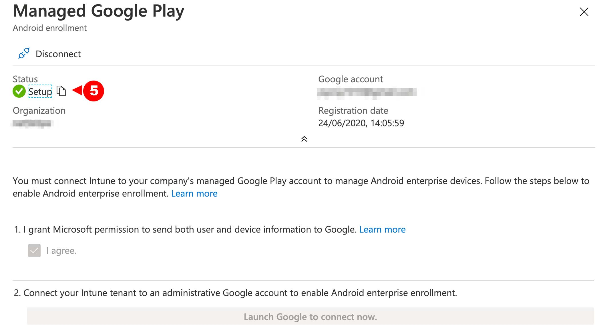
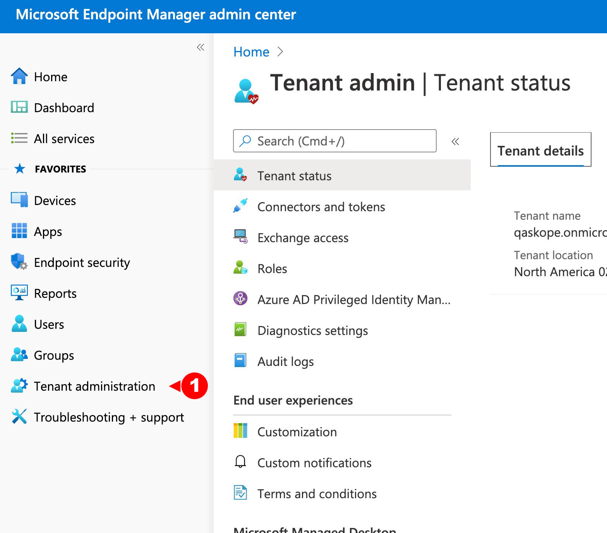
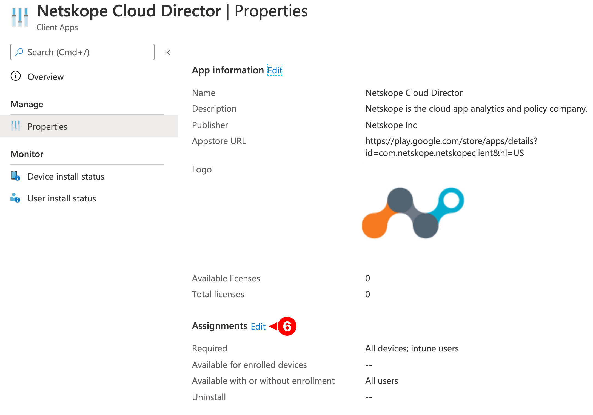
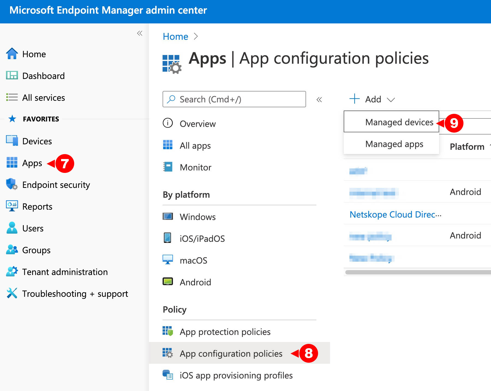
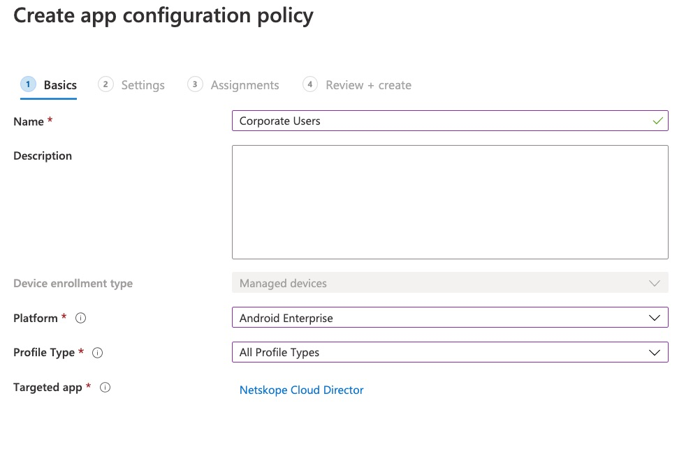
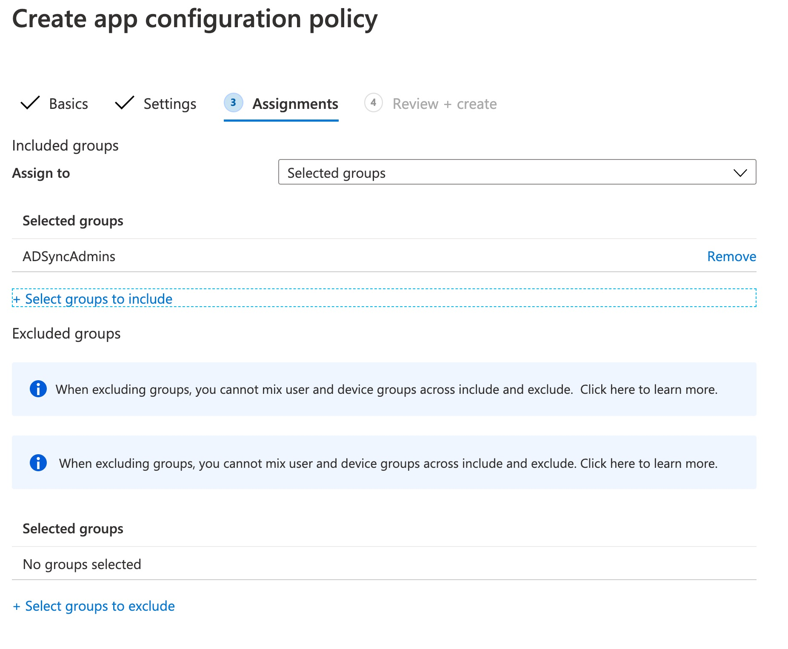

Configure Intune for Android
Bind Android for Enterprise with Intune
Before you begin, ensure that you have configured Android for Enterprise binding for Microsoft Intune. This is done from the MS Endpoint Manager (https://endpoint.microsoft.com/).
Log in to Endpoint Manager admin center, go to Devices > Android and select Android Enrollment.


Click Managed Google Play.
Select the I agree checkbox and click the Launch Google to Connect now button. In the Google Play pop-up window, complete the business registration steps.
After registration is complete, go to MS Endpoing Manager admin center, click Devices > Android > Android Enrollment > Managed Google Play to verify the registration process. If successful, the Status label will display Setup with a green tick.
In the Android Enrollment page, select the Enrollment Profileto get the token that you can share with users for enrollment.

Approve Netskope Cloud Director
Log in to your Google Play Store account and search for Netskope Cloud Director.
Click Approve send authorization to MS Endpoint Manager.
Setting up Apps in MS Endpoint Manager
In the MS Endpoint Manager admin center, go to Tenant Administration > Connectors and Token page.
Select Managed Google Play and click Sync to get all approved apps listed in Intune Apps > All Apps.

Deploy Netskope Cloud Director
Netskope Cloud Director can be deployed to users or user groups as optional or mandatory deployment action.
In the MS Endpoint Manager admin console, go to Apps > All Apps and select Netskope Cloud Director

Click Properties and then click Assignments.
.Select the user groups or users to which the app is to be deployed in the Required section (options +Add group, +Add all users, +Add all devices) and click Review+Save, and then click Save.

Select the appropriate deployment action and click Save
Create App Configuration and Deploy
In the MS Endpoint Manager admin center, go to Apps > App Configuration Policy and click Addand select Managed Devices.
In the Basics section of the Create app configuration policy page, enter the following details and click Next.
Name: Give a name to the policy
Platform: Android Enterprise
Associated App: Select Netskope Cloud Director
In the Settings section of the Create app configuration policy page, locate Configuration Settings and select the Use configuration designer option from the Configuration settings format dropdown list .
Click Add and select the following mandatory values and click OK.
User Email Address: {{mail}}
Host: <addon-hostname>
Token: <Organization Key>

Note
Login to your tenant with admin credentials.
Click Settings > Security Cloud Platform > MDM Distribution.
In the MDM Distribution page, scroll down to Create VPN Configuration section to find your Organization ID.

ns_mdm_check is an optional value that is used for Android deviceclassification purpose. If you are not doing device classification for Android,you can safely ignore this field.
In the Assignments section of the Create app configuration policy page, select groups from the Assign to dropdown menu to which the policy is applied. Assuming the option selected was Selected Groups, select include the Azure AD groups that this policy will apply to and click Next.
Note
You can also select groups that can be excluded from this configuration policy.
In the Review + create section of the Create app configuration policy page, review the configuration and click Create.

Enroll the Android devices to the Intune Company Portal application available on Google Play.